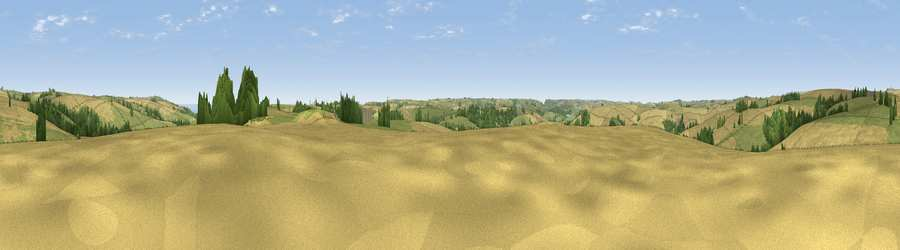

Viewpoint near Sherford
#21480 in England · top 50% of its area beats it · near Sherford · path 170 mWhere it is
The exact computed spot (SX 78875 44325). Click the marker for map links.
Public access: the nearest public right of way is about 170 m away — the final stretch may cross private land. Computed from Natural England's CRoW access layer and OpenStreetMap rights of way — not the legal definitive map. Always verify locally.
The view, rendered

A 360° render of this exact spot computed from the terrain model, tree cover and land cover — summer colours, afternoon light, calibrated against photographs of famous viewpoints. Real trees, hedges and buildings will differ in detail.
The panorama
Grey silhouette: terrain skyline in each direction (720 bearings, Earth curvature and refraction included). Dashed green: skyline with trees (+15 m) and buildings (+8 m) as obstacles. Blue strip: how far the ground is visible on each bearing.
Where the view opens
Wedge length = distance to the farthest visible ground on that bearing (vegetation-aware). Rings at 10, 25 and 50 km.
What fills the view
52% cropland · 37% grassland · 8% woodland · 1% water
Angular shares of the visible panorama (visual magnitude), not map area. Landscape diversity 0.43 (0–1 Shannon).
Key numbers
More beautiful places nearby
The staircase of upgrades: each row has a higher view potential than everything closer. Driving times are estimates from straight-line distance, calibrated against real road routing — check an actual route before setting out.
| Place | Direction | Drive | Score |
|---|---|---|---|
| Viewpoint near Sherford | E · 0 km | ~1 min | 58.5 |
| Viewpoint near Stokenham | ESE · 2 km | ~5 min | 70.8 |
| Viewpoint near Stokenham | ESE · 3 km | ~7 min | 74.0 |
| Viewpoint near Slapton | ENE · 3 km | ~8 min | 75.7 |
| Viewpoint near Torcross | SE · 4 km | ~9 min | 76.2 |
| Viewpoint near Strete | ENE · 5 km | ~11 min | 76.5 |
| Viewpoint near Beesands | SSE · 5 km | ~11 min | 80.9 |
| Viewpoint near South Hallsands | SSE · 7 km | ~15 min | 81.2 |
50.28642, -3.70157 · source: screening · position refined by local search. Computed location — check access rights before visiting.